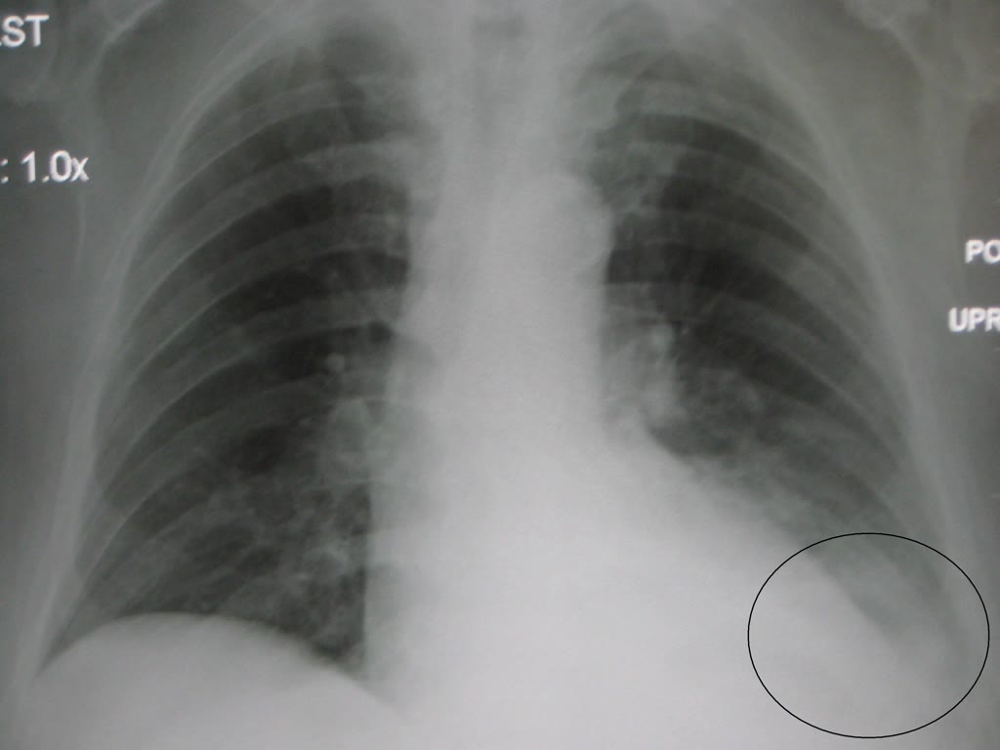
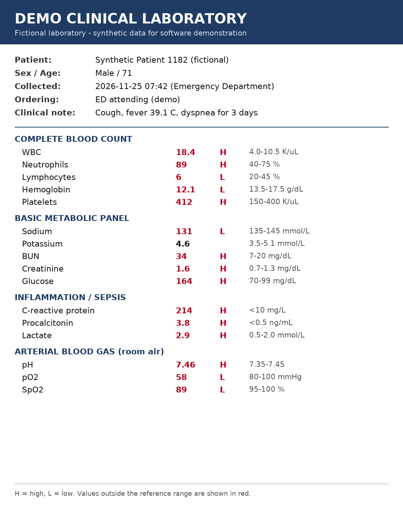

A medical vision-language model, running entirely on one DGX Spark
Three live demos, recorded in real time, nothing sped up. Every patient, chart and lab value is synthetic;
the chest X-ray is an openly licensed teaching image.
1 · Read a six-year chart before the visit
581 notes, labs, consults and reports for one synthetic patient: about 51,000 tokens, read in one pass.
Synthetic patient chart581 documents
LingSante · safety review
Follow-up question
–
prompt tokens
–
chart read (first token)
–
read speed
–
answer speed
–
follow-up first token (cached chart)
2 · Read the film and the labs, file the note
A chest radiograph and an admission lab report go in; a structured encounter note comes out as a tool call.
Inputs2 images


Chest radiograph: James Heilman, MD, CC BY 3.0, via Wikimedia Commons.
Lab report: fabricated for this demo.
LingSante · radiograph read
Tool call · file_encounter_note
3 · Eight patients arrive at once
Eight triage requests stream in parallel from the same model on the same Spark.
8
simultaneous requests
–
every patient answering
–
all eight triaged
–
aggregate generation
One DGX Spark. No cloud.
LingSante-3.1-air-VL (inclusionAI, MIT) served by SparkLing 0.1.4 and the Atlas engine, with native drafting.
Synthetic data; research demonstration only, not for clinical use. github.com/Enntity/SparkLing